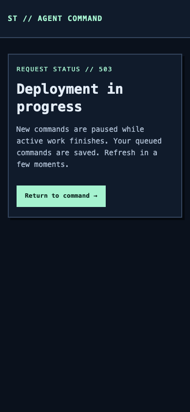
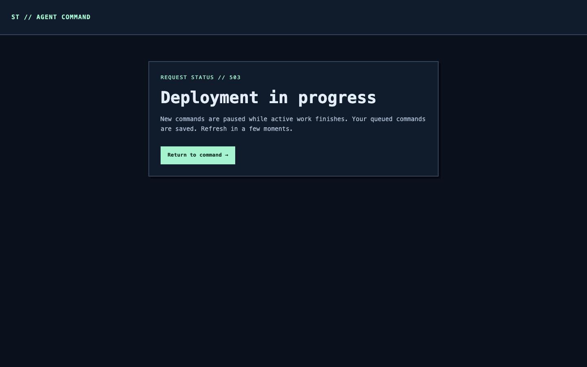
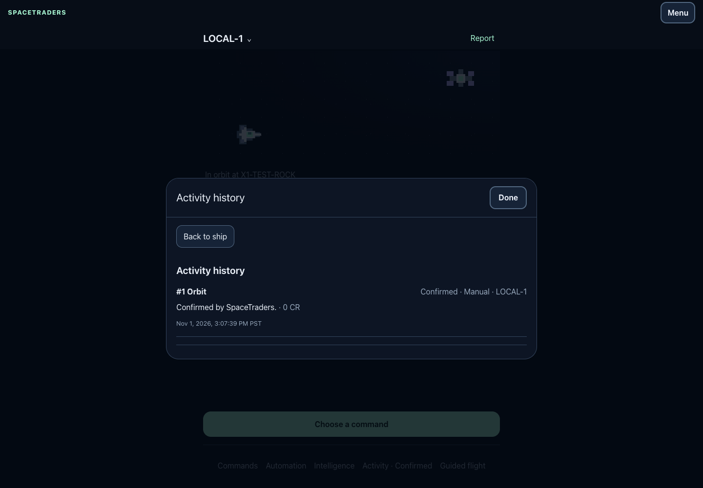

SPACETRADERS // OPS03 // LOCAL EVIDENCE
Persistent deployment gates
Version 1 close/open/status control fences dynamic web requests, dispatch and actual queue reservations. Reserved work finishes, pending intent stays durable, and a ten-minute drain timeout restores pickup without signaling a process or replaying an uncertain action.
implement/issue-11-deployment-drain-20261101
Base 5c1990696811554d03a752dae2cfec6259fcc36c
Herd PHP 8.5.12 · Node 26.13.0 · pnpm 12.16.1
Review and integration notes · Operator runbook · Machine-readable summary
Verified boundaries
| Check | Observed result | Evidence |
|---|---|---|
| Full verification | 332 tests, 1760 assertions; deterministic assets, frontend checks and Pint | Log |
| Deployment processes | 23 checks using real owned SQLite workers and scheduler descendants | Log |
| Controller race | Superseded waiter fails and leaves its successor closed | Log |
| Ten-minute abort | Four wall-clock checks; writer survives timeout and finishes normally | Log |
| Browser | Authenticated write denial, unchanged queue, resumed confirmation, dark phone and desktop layouts | Log |
| Existing workflows | Native ship journey, mining/reconciliation, contracts, Stop and launchd lifecycle pass | Log |
| Locked dependencies | Composer validation, platform checks and both security audits pass | Log |
| Historical main | Expected rejection: pre-OPS03 code has no deployment protocol | Log |
Scheduler measurements
The nominal 120-second cache lock expired after 119.946 seconds with integer-time cache expiry. The idle pass took 0.013 seconds. A full 50-intent pass with a competing one-second SQLite writer took 1.446 seconds. Live OS ownership prevented overlapping dispatch after cache lock removal. Target-host performance remains unmeasured.
Browser inspection
These synthetic journeys use the real local handlers, authenticated session, CSRF token and finite database worker. The host browser requested a light color scheme.



Integration gates
Retain existing PR #12 and apply the local commit only after Taylor reviews it. Main advanced during implementation, so re-run verification on the integrated head. First installation must quiesce pre-protocol processes separately. Later rollbacks require compatible version 1 artifacts and fresh release-specific worker and scheduler checks before opening.
Remaining server supervision, backup, migration, release switching, public HTTPS and production capacity checks belong to the deployment transaction. No independent delegated review ran in this no-subagent thread.